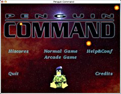
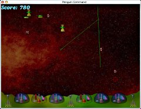

- This Site
- Information
- News
- Game Links
- About me
- Bitbucket
- Software
- PC Games
- Penguin Command
- BumpRace
- Black-Box
- Castle-combat
- NuclearChess
- Web Games
- jsNumbers
- Zaurus Games
- zSubHunt
- zBlack-Box
- zNumbers
- zMerlin
- zTappy
- zChain
- VR3 Software
- Black-Box-VR3
- Numbers
- Easy install
- Libs
- SFont
- Fonts for SFont

- What is Penguin-Command?
- This is a clone of the classic "Missile Command" Game, but it has better graphics and music. The gameplay has only been slightly modified. Penguin Command is licensed under the GPL.
- Downloads
- Penguin Command 1.6.11 for Linux (source)
- Penguin Command 1.6.11 for Windows
- Penguin Command 1.6.9 for MacOS X
- Penguin Command for debian
- Penguin Command for FreeBSD
- Penguin Command for BeOS
- Penguin Command for Solaris
- Penguin Command for Amiga OS4
- Penguin Command 0install interface (linux/i386)
- Penguin Command for AROS

- What's new in version 1.6.11?
- fixed possible buffer overflow when $HOME is very large (Thanks Ulf H�rnhammar).
- removed the great tune Penguin Night since it seemed to cause random crashes (Thanks Brandon Barnes). Better solutions are very welcome. See the bug report for details
- Reviews from Happypenguin.org
- Incredible! The graphics and sound are beautiful, especially the music, and I've yet to find a bug in the game. This is another excellent example of what can be achieved in open source games.
- Best waste of my time I have managed to come up with yet. Enjoyable, well paced and challenging.
- Really wonderfull ! [...]
- Penguin Command was everything I hoped it would be, and more. The graphics are very well done, the gameplay is smooth, and the game is pleasantly addictive. I can give this game no less than 5 stars.
- I like it, nice sounds, nice graphics. It's fast enough on my K6-200.
- Awesome game! Was just going through a menu and came across the icon...low and behold I find my now favorite Linux game!